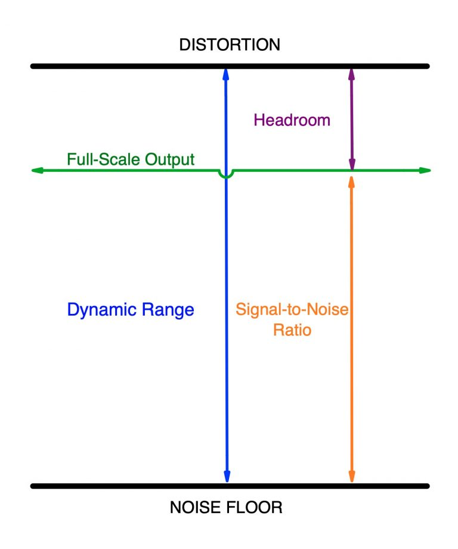

The dynamic range of any recording is defined as the ratio of the loudest peak to the quietest, expressed in decibels (dB). For context, the human auditory system has a dynamic range of about 90 dB; a person with healthy hearing can perceive everything from a whisper (roughly 30 dB) to a jet taking off (120 dB). Note that the decibel scale is logarithmic, not linear, so the difference between 30 dB and 120 dB is even more significant than it looks.
What is Dynamic Range?
By Vincent Fu, Audiophile Club Co-Leader
Every piece of music has a certain dynamic range, meaning the difference between the loudest and softest passages. Audio gear also has a distinctive dynamic range, though in this case the term describes the boundaries of what that piece of equipment is capable of producing. In this article, we’ll explore the concept in detail and also explain why dynamic range is so important to the enjoyment of listening to recorded music.
THE TECHNICALITIES

Playback:
Audio gear:
The dynamic range of a 16-bit / 44.1 kHz CD is over 90 dB — slightly greater than the range of human hearing. 24-bit digital audio has a theoretical dynamic range of 144 dB, but no playback system can equal that.
Audio gear:
- Reproduces music also has a dynamic range. For equipment such as receivers, speakers and headphones, this is calculated as the ratio between the loudest sound that a unit can produce and the quietest one before noise becomes audible (the “noise floor”).
- The greater its dynamic range, the more headroom the component will have. Headroom is the range above the average operating level before distortion.
Conclusion
Calculating distortion in an analog component is not nearly as precise. That’s because if the signal is overloading the circuit, it doesn’t necessarily worsen the sound quality, as it does with digital audio. In fact, analog audio often sounds better when it’s slightly overloaded and creating saturation. Eventually, if you keep pushing up the volume, it will distort enough to degrade the sound, but where that point may be is a matter of opinion.